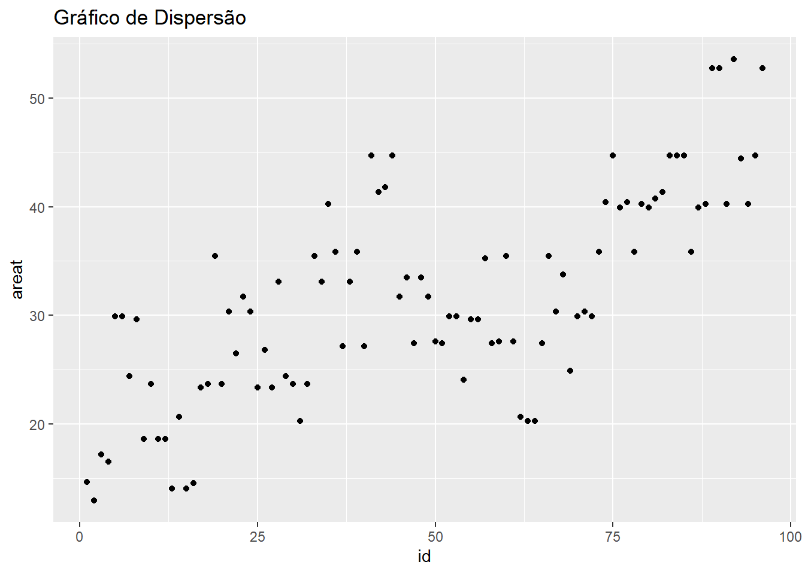
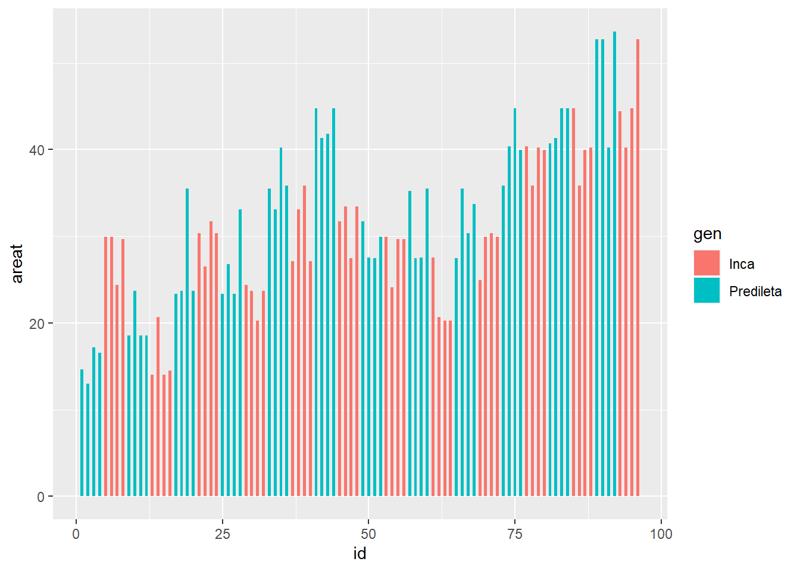
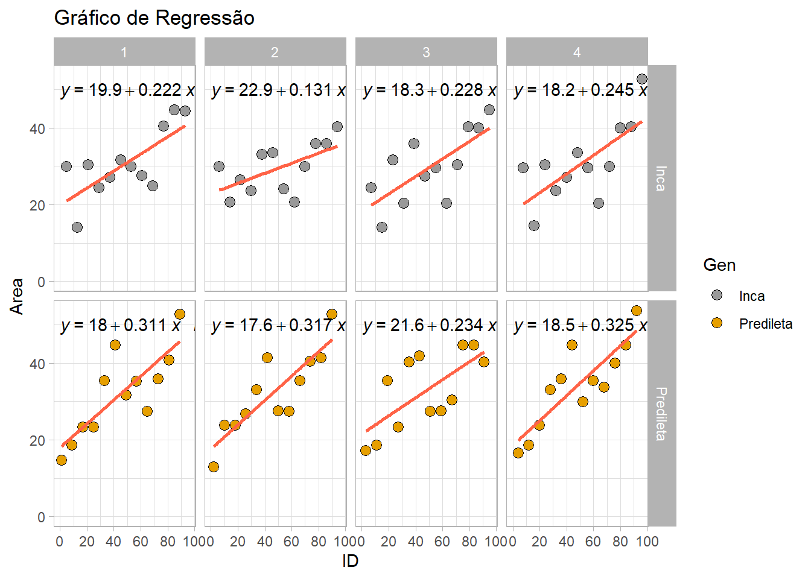
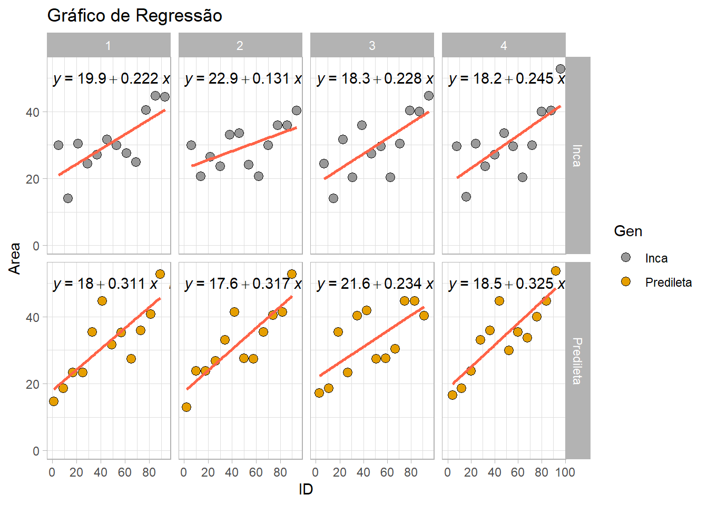
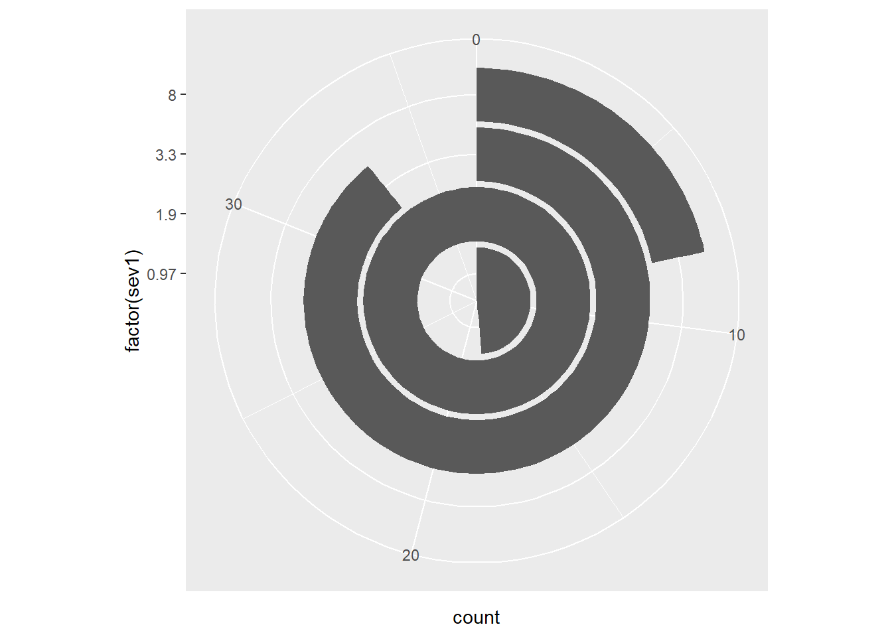
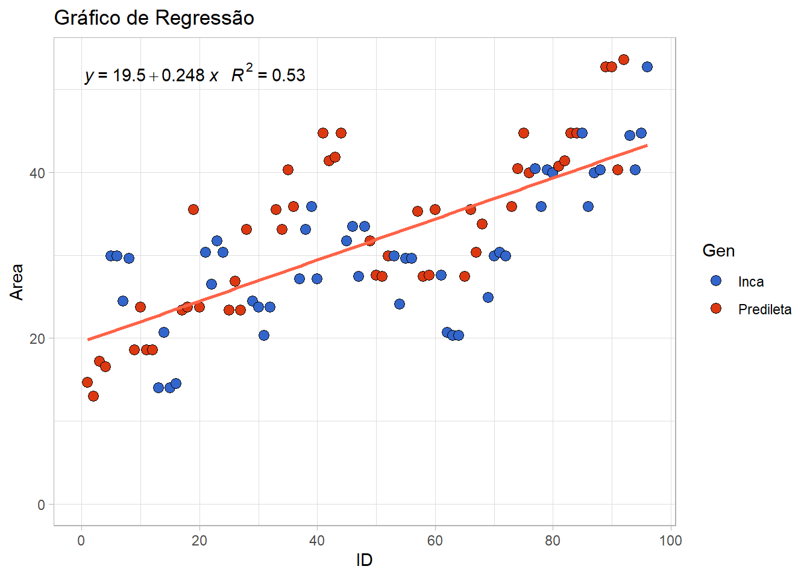
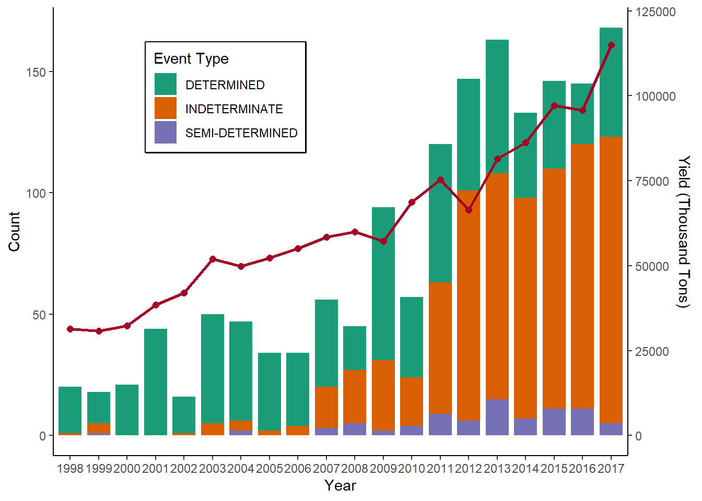
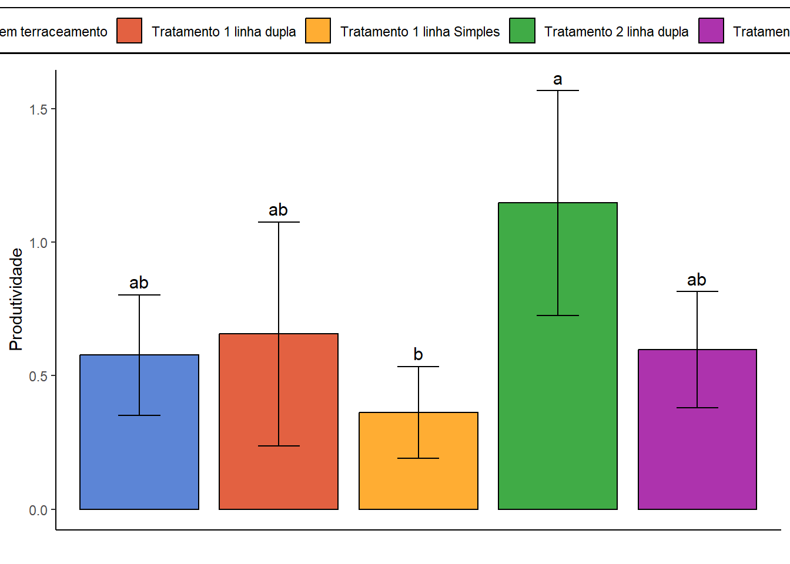

Last updated: 2023-05-11
Checks: 6 1
Knit directory:
Manipulacao-dados-e-Analise-Grafica-R/
This reproducible R Markdown analysis was created with workflowr (version 1.7.0). The Checks tab describes the reproducibility checks that were applied when the results were created. The Past versions tab lists the development history.
The R Markdown file has unstaged changes. To know which version of
the R Markdown file created these results, you’ll want to first commit
it to the Git repo. If you’re still working on the analysis, you can
ignore this warning. When you’re finished, you can run
wflow_publish to commit the R Markdown file and build the
HTML.
Great job! The global environment was empty. Objects defined in the global environment can affect the analysis in your R Markdown file in unknown ways. For reproduciblity it’s best to always run the code in an empty environment.
The command set.seed(20220826) was run prior to running
the code in the R Markdown file. Setting a seed ensures that any results
that rely on randomness, e.g. subsampling or permutations, are
reproducible.
Great job! Recording the operating system, R version, and package versions is critical for reproducibility.
Nice! There were no cached chunks for this analysis, so you can be confident that you successfully produced the results during this run.
Great job! Using relative paths to the files within your workflowr project makes it easier to run your code on other machines.
Great! You are using Git for version control. Tracking code development and connecting the code version to the results is critical for reproducibility.
The results in this page were generated with repository version c23081a. See the Past versions tab to see a history of the changes made to the R Markdown and HTML files.
Note that you need to be careful to ensure that all relevant files for
the analysis have been committed to Git prior to generating the results
(you can use wflow_publish or
wflow_git_commit). workflowr only checks the R Markdown
file, but you know if there are other scripts or data files that it
depends on. Below is the status of the Git repository when the results
were generated:
Ignored files:
Ignored: .Rproj.user/
Untracked files:
Untracked: data/contribuicao.txt
Untracked: data/dados.xlsx
Untracked: grafico.tiff
Unstaged changes:
Modified: analysis/analise-grafica.Rmd
Modified: data/dados.csv
Deleted: gráfico.tiff
Note that any generated files, e.g. HTML, png, CSS, etc., are not included in this status report because it is ok for generated content to have uncommitted changes.
These are the previous versions of the repository in which changes were
made to the R Markdown (analysis/analise-grafica.Rmd) and
HTML (docs/analise-grafica.html) files. If you’ve
configured a remote Git repository (see ?wflow_git_remote),
click on the hyperlinks in the table below to view the files as they
were in that past version.
| File | Version | Author | Date | Message |
|---|---|---|---|---|
| html | c23081a | WevertonGomesCosta | 2023-05-09 | Build site. |
| Rmd | d68e8c2 | WevertonGomesCosta | 2023-05-09 | Updates scripts |
| Rmd | e2a770f | WevertonGomesCosta | 2023-05-09 | Updates Readme e scripts análise gráfica |
| Rmd | 23ed159 | Weverton Costa | 2023-05-09 | Update Scripts |
| Rmd | d3d2983 | Weverton Costa | 2023-05-09 | Updates scripts |
| Rmd | 5464454 | Weverton Costa | 2023-05-08 | Update Index |
| Rmd | 620025d | WevertonGomesCosta | 2022-11-16 | Update |
| html | 620025d | WevertonGomesCosta | 2022-11-16 | Update |
| Rmd | 5c6cf18 | WevertonGomesCosta | 2022-11-04 | Update |
| html | 5c6cf18 | WevertonGomesCosta | 2022-11-04 | Update |
| Rmd | 5832550 | WevertonGomesCosta | 2022-09-12 | Update |
| html | 5832550 | WevertonGomesCosta | 2022-09-12 | Update |
| Rmd | 206bfa9 | WevertonGomesCosta | 2022-09-12 | Update |
| html | 206bfa9 | WevertonGomesCosta | 2022-09-12 | Update |
Agora que já aprendemos algumas técnicas de manipulação de dados,
vamos começar a explorar como criar gráficos usando o pacote
ggplot2 do tidyverse. Nesta seção, vamos aprender a sintaxe
básica para criar um gráfico e como personalizá-lo para apresentar os
resultados de forma clara e informativa.
Primeiro vamos instalar todos os pacotes necessários para leitura dos dados e produção dos gráficos:
install.packages(
c(
"tidyverse",
"DataExplorer",
"metan",
"readxl",
"ggpmisc",
"gridExtra",
"extrafont",
"ggpubr",
"ggthemes"
)
)Agora vamos carregar os pacotes usando as funções
library():
library(tidyverse)
library(DataExplorer) # Útil para análise exploratória
library(metan) # Possui ótimos gráficos de correlação e para análise exploratória
library(readxl) # Leitura de dados no formato .xlsx
library(ggpmisc) # Adicioanr o modelo na regressão
library(gridExtra) # Agrupar gráficos
library(extrafont) # Pacote para alterar a fonte do texto
library(ggpubr) # fornece algumas funções fáceis de usar para criar e personalizar gráficos
library(ggthemes) # Temas e paletas de coresVamos importar os dados exemplos que utilizaremos:
dados <- read_csv("data/dados.csv") # Função para importar os dadosRows: 96 Columns: 9
-- Column specification --------------------------------------------------------
Delimiter: ","
chr (2): trat, gen
dbl (7): id, blocos, sev1, sev2, sev3, area, areat
i Use `spec()` to retrieve the full column specification for this data.
i Specify the column types or set `show_col_types = FALSE` to quiet this message.dados# A tibble: 96 x 9
trat id gen blocos sev1 sev2 sev3 area areat
<chr> <dbl> <chr> <dbl> <dbl> <dbl> <dbl> <dbl> <dbl>
1 Testemunha 6165 1 Predileta 1 0.97 1.9 12 58.7 14.7
2 Testemunha 6165 2 Predileta 2 1.9 1.9 8 48.0 13.0
3 Testemunha 6165 3 Predileta 3 3.3 3.3 12 76.6 17.2
4 Testemunha 6165 4 Predileta 4 1.9 3.3 12 71.8 16.5
5 Testemunha 6165 5 Inca 1 1.9 12 31 199. 29.9
6 Testemunha 6165 6 Inca 2 1.9 12 31 199. 29.9
7 Testemunha 6165 7 Inca 3 1.9 8 22 140. 24.4
8 Testemunha 6165 8 Inca 4 0.97 12 31 196. 29.6
9 UFV 02 9 Predileta 1 0.97 8 8 87.4 18.6
10 UFV 02 10 Predileta 2 1.9 12 12 133. 23.7
# i 86 more rowsSintaxe básica do ggplot2
Neste curso, vamos explorar o pacote ggplot2, uma das
ferramentas mais poderosas do R para criar gráficos e visualizações de
dados. O ggplot2 é um pacote do R que permite a criação de
gráficos estatísticos elegantes e complexos. Ele é baseado em uma
gramática de gráficos, que permite ao usuário construir gráficos a
partir de camadas de informação, adicionando progressivamente detalhes
ao gráfico.
Para criar gráficos utilizando o pacote ggplot2, é
necessário utilizar a função ggplot() e passar no mínimo
três elementos:
- O objeto principal que contém os dados;
- A estética
aes()que define as variáveis de cada eixo; - O objeto geométrico
geom_***()que define a geometria que irá representar os dados no gráfico, como pontos, boxplot, linha, etc.
Recomendamos a leitura da documentação do pacote para mais detalhes sobre as funcionalidades disponíveis Function reference do ggplot.
Depois, adiciona-se camadas de informação para construir o gráfico. A estrutura básica de um gráfico com ggplot2 é:
ggplot(data = <dados>) +
<geom> +
<estética> +
<coordenadas>data: conjunto de dados a ser utilizado no gráficogeom: o tipo de geometria (ponto, linha, barra etc.) que será usada no gráficoestética: as variáveis estéticas que serão usadas no gráfico (x, y, cor, forma etc.)coordenadas: o sistema de coordenadas a ser usado no gráfico (cartesiano, polar etc.)
Criando um gráfico básico
Primeiro, iremos praticar sobre como é feito os gráficos básicos e
abordar a maioria das geometrias existentes no ggplot2.
Após isso iremos refinar a estética do nosso gráfico com temas, cores, alteração de texto e disposição das variáveis, legendas, etc.
Primeiro gráfico
Como já mencionado, o gráfico necessita de 3 informações básica, os
dados (dados), a estética (aes())e a forma
geométrica de representação (geom_***()).
Gráfico de dispersão
Para criar um gráfico de dispersão, vamos utilizar os nossos
dados para representar uma dispersão
(geom_point()) da variável id eixo x e
area no eixo y.
Podemos criar esse gráfico de duas formas: inserindo o banco de dados
diretamente na função ggplot() ou utilizando o operador
%>% (pipe) para passar o banco de dados para a função
ggplot().
1 - Inserindo o banco de dados dentro da função
ggplot().
ggplot(dados, aes(x = id, y = areat)) +
geom_point()
2 - Utilizando o pipe %>%. Nesse caso, não há
necessidade de inserir o banco de dados dentro da função
ggplot().
dados %>%
ggplot(aes(x = id, y = areat)) +
geom_point()
Como visto no código acima, ao usar a função ggplot(),
usamos o símbolo + para adicionar ou alterar o gráfico.
Aqui adicionamos a dispersão dos dados, mas poderíamos adicionar
qualquer outra forma geométrica.
Adicionando elementos ao gráfico
Os gráficos criados com ggplot2 podem ser personalizados
de diversas formas, adicionando-se elementos como títulos, legendas,
eixos e escalas de cores.
Por exemplo, o código abaixo adiciona um título ao gráfico de dispersão criado anteriormente:
ggplot(data = dados, aes(x = id, y = areat)) +
geom_point() +
ggtitle("Gráfico de Dispersão")
Escalas de cores e temas
O ggplot2 permite a personalização de escalas de cores
para os gráficos, bem como a utilização de diferentes temas visuais para
os gráficos.
Por exemplo, o código abaixo cria um gráfico de dispersão com pontos
coloridos pela variável gen e utiliza o tema
“theme_bw”:
# criando um gráfico de dispersão com cor e tema personalizados
ggplot(data = dados, aes(x = id, y = areat, color = gen)) +
geom_point() +
scale_colour_manual(values = c("red", "blue")) +
ggtitle("Gráfico de Dispersão com Escala de Cores Personalizada") +
theme_bw()Gráficos de Dispersão
Para criar um gráfico de dispersão com o ggplot2,
utilizamos a função geom_point(), especificando as
variáveis x e y na estética aes(). Por exemplo, o código
abaixo cria um gráfico de dispersão simples com o dataset
dados, utilizando as variáveis id e
areat:
ggplot(dados, aes(x = id, y = areat)) +
geom_point() +
ggtitle("Gráfico de Dispersão Simples")Gráfico de linhas
Para criar um gráfico de linhas com o ggplot2,
utilizamos a função geom_line(), especificando as variáveis
x e y na estética aes(). Por exemplo, o código abaixo cria
um gráfico de linhas simples com o dataset dados,
utilizando as variáveis trat e areat:
# criando um gráfico de linhas com ggplot2
ggplot(dados, aes(x = id, y = areat)) +
geom_line() +
ggtitle("Gráfico de Linhas Simples")
Gráfico de Barras
Os gráficos de barras e colunas são utilizados para comparar a
frequência, magnitude ou proporção de diferentes categorias. O
ggplot2 permite criar gráficos de barras e colunas com a
função geom_bar(), que agrupa os dados por categoria e
conta o número de observações em cada categoria. Por exemplo, o código
abaixo cria um gráfico de barras mostrando o número de carros de
diferentes marcas:
No entanto, essa função cria uma contagem dos dados, então devemos
atribuir apenas uma estética x ou y.
dados %>%
ggplot(aes(x = areat, fill = gen)) +
geom_bar(position = "dodge", width = 0.5) +
ggtitle("Gráfico de Linhas Simples - Número de gen por areat")
Também utilizamos a função fill para colorir as barras
de acordo com o gen (Inca e Predileta). Em seguida,
utilizamos a função geom_bar() para criar o gráfico de
barras, especificando o argumento position = "dodge" para
mostrar as barras lado a lado. Além disso adicionamos a função
width = 0.5 para aumentar a largura das barras.
Gráfico de Colunas
Para criar um gráfico de colunas usamos a função
geom_col().
dados %>%
ggplot(aes(x = id, y = areat, fill = gen)) +
geom_col(width = 0.5) +
ggtitle("Gráfico de Colunas Simples")
Observe que existe uma diferença sútil entre geom_col e
geom_bar: geom_col mostra o valor para o eixo
y baseado nos valores numa coluna no seu tibble; geom_bar gera os
valores para o eixo y baseado no número de observações em cada grupo de
seu tibble. Então geom_bar é um atalho para:
dados %>%
group_by(gen, areat) %>%
tally() %>%
ggplot() +
geom_col(aes(x = areat, y = n, fill = gen), width = 0.5, position = "dodge") +
ggtitle("Gráfico de Colunas Simples - Número de gen por areat")
Para que o gráfico de barras seja equivalente ao gráfico de colunas,
atribuímos o argumento stat="identity" dentro da função
geom_bar(). Aqui devemos especificar tanto o x
ou y.
dados %>%
ggplot(aes(x = id, y = areat, fill = gen)) +
geom_bar(stat = "identity",width = 0.5) 
Adicionando etiquetas e valores nos gráficos
Podemos adicionar etiquetas e valores nos gráficos de barras e
colunas com as funções geom_text() e
geom_label(). A função geom_text() adiciona as
etiquetas diretamente nas barras ou colunas, enquanto a função
geom_label() adiciona etiquetas em caixas de texto com
borda.
# criando um gráfico de barras com etiquetas de valores
dados %>%
ggplot(aes(x = id, y = areat, fill = gen)) +
geom_bar(stat = "identity", width = 0.5) +
geom_text(aes(label = round(areat, digits = 0), y = areat + 1),
position = position_dodge(0.9),
vjust = 0) +
ggtitle("Áreat por id e gen")
Para adicionar etiquetas de valores às barras, usamos a função
geom_text(). Especificamente, definimos a estética label
para mostrar o valor da área arredondado para zero casas decimais e
ajustamos a posição vertical (y) da etiqueta para que ela
fique acima da respectiva barra. Além disso, usamos a função
position_dodge() para ajustar a posição horizontal das
etiquetas e garantir que elas não se sobreponham.
Histograma
A função geom_histogram() é utilizada para criar
gráficos de histograma ou de frequência. Ela conta a frequência dos
dados, então devemos atribuir apenas uma estética x ou
y.
dados %>%
ggplot(aes(x = areat)) +
geom_histogram()`stat_bin()` using `bins = 30`. Pick better value with `binwidth`.
Podemos também utilizar o gráfico de histograma para verificar a
função de distribuição dos dados. Abaixo, utilizamos a função
stat_function() para plotar uma distribuição normal, que
tem como argumentos a média e o desvio padrão dos dados.
dados %>%
ggplot(aes(x = areat)) +
geom_histogram(aes(y = after_stat(density)), bins = 10, fill ="white", color = "black") +
stat_function(
fun = dnorm,
aes(colour = "red"),
args = list(mean = mean(dados$areat), sd = sd(dados$areat))
)+
guides(colour = "none")
O argumento bins em geom_histogram() foi
adicionado para controlar o número de barras no gráfico. Também foi
adicionado fill ="white" e color = "black"
para mudar a cor das barras para branco com bordas pretas e
guides(colour = "none") para remover a legenda da linha
vermelha que foi adicionada em stat_function().
fill= é para cor do preenchimento das barras e
color = para a cor das bordas das barras
Linha vertical e horizontal
Para plotar uma reta no gráfico, podemos utilizar a função
geom_vline() para linhas verticais ou
geom_hline() para linhas horizontais.
No exemplo abaixo vamos calcular a média da areat e
plotar a reta média.
dados %>%
ggplot(aes(x = areat)) +
geom_histogram(bins = 10, fill ="white", color = "black") +
geom_vline(xintercept = mean(dados$areat), colour = "red", linetype = "longdash")Agora podemos considerar apenas quais areat apresentam
com contagem acima de 10.
dados %>%
ggplot(aes(x = areat, fill = gen)) +
geom_histogram(bins = 10, fill ="white", color = "black") +
geom_hline(yintercept = 10, colour = "blue", linetype = "dotted")
Boxplot
O boxplot é um gráfico que permite visualizar a distribuição dos
dados a partir dos quartis, mediana e outliers. Para construir um
boxplot, usamos a função geom_boxplot(). Nesse tipo de
gráfico também é necessário combinar dados contínuos area
com dados categóricos gen.
dados %>%
ggplot(aes(y = area, x = gen, fill = gen)) +
geom_boxplot(outlier.colour = "red")+
geom_jitter(alpha = 0.2 , width = 0.1)+
labs(x = "Gen", y = "Area", fill = "Gen") +
scale_y_continuous(limits = c(0,600))+
theme_minimal()
Nesse código, adicionamos uma camada geom_jitter() para
mostrar os pontos individuais, com transparência alpha e
largura width. Também adicionamos títulos para os eixos x e
y e para a legenda com a função labs(). Limitamos o eixo y
entre 0 e 600 com scale_y_continuous(). E, por fim,
alteramos o tema do gráfico para um tema minimalista com a função
theme_minimal().
Correlação
Os gráficos de correlação são úteis para visualizar a relação entre duas ou mais variáveis. Antes de plotar o gráfico, precisamos calcular a correlação entre as variáveis de interesse.
Vamos estimar a correlação das variáveis sev1,
sev2, sev3, area e
areat. Para isso, usaremos a função usaremos a função
corr_coef(), do pacote metan (mais informações
sobre esse pacote). A função retorna uma matriz de correlação das
nossas variáveis.
library(metan)
# Calcula a matriz de correlação das variáveis selecionadas
coef_cor <- corr_coef(dados %>%
select(sev1:areat))
# Exibe a matriz de correlação na tela
coef_cor---------------------------------------------------------------------------
Pearson's correlation coefficient
---------------------------------------------------------------------------
sev1 sev2 sev3 area areat
sev1 1.000 0.355 0.354 0.431 0.439
sev2 0.355 1.000 0.671 0.951 0.925
sev3 0.354 0.671 1.000 0.864 0.880
area 0.431 0.951 0.864 1.000 0.989
areat 0.439 0.925 0.880 0.989 1.000
---------------------------------------------------------------------------
p-values for the correlation coefficients
---------------------------------------------------------------------------
sev1 sev2 sev3 area areat
sev1 0.00e+00 3.82e-04 3.98e-04 1.18e-05 7.58e-06
sev2 3.82e-04 0.00e+00 7.75e-14 1.16e-49 3.16e-41
sev3 3.98e-04 7.75e-14 0.00e+00 8.05e-30 4.29e-32
area 1.18e-05 1.16e-49 8.05e-30 0.00e+00 2.75e-80
areat 7.58e-06 3.16e-41 4.29e-32 2.75e-80 0.00e+00Para plotar o gráfico de correlação, usaremos a função
plot(). Se quisermos alterar o tipo de disposição das
variáveis para a parte superior do gráfico, podemos usar o argumento
type = "upper". Para não ocorrer a ordenação das variáveis
de acordo com o valor da correlação, usamos
reorder = FALSE. Podemos também alterar os textos dos eixos
e do gráfico usando os argumentos size.text.lab e
size.text.cor, respectivamente.
# Plota o gráfico de correlação
plot(
coef_cor,
type = "upper",
reorder = FALSE,
size.text.lab = 14,
size.text.cor = 5
)
Veja mais sobre as particularidades da função plot() aqui.
Outra forma de visualizar a correlação entre as variáveis é pela
função corr_plot(). Essa função permite a visualização gráfica e
numérica de uma matriz de correlação. No exemplo abaixo, selecionamos
apenas as variáveis sev1, sev2,
sev3, area e areat para gerar o
gráfico.
# Plota o gráfico de correlação usando a função corr_plot()
dados %>%
select(sev1:areat) %>%
corr_plot(shape.point = 21,
col.point = 'black',
fill.point = 'orange',
size.point = 2,
alpha.point = 0.6,
maxsize = 4,
minsize = 2,
smooth = TRUE,
size.line = 1,
col.smooth = 'black',
col.sign = 'cyan',
col.up.panel = 'black',
col.lw.panel = 'black',
col.dia.panel = 'black',
pan.spacing = 0,
lab.position = 'tl')
Regressão
A análise de regressão é uma das técnicas estatísticas mais
utilizadas para a modelagem de dados. Nesse tipo de análise, buscamos
estabelecer uma relação entre uma variável resposta y e uma
ou mais variáveis explicativas x.
Para produzir um gráfico de regressão no R, utilizamos a função
geom_smooth().
Abaixo, apresentamos um exemplo de gráfico de dispersão com uma
regressão linear entre as variáveis areat e
id.
dados %>%
ggplot(aes(x = id, y = areat)) +
geom_smooth()`geom_smooth()` using method = 'loess' and formula = 'y ~ x'
Por padrão, essa função utiliza o método não-paramétrico “loess” e a
fórmula “y ~ x”. Entretanto, podemos definir os argumentos
method =, que define qual método iremos utilizar, por
exemplo method = lm para definir uma regressão linear entre
x e y, se= que é um argumento
lógico (ou seja, recebe TRUE ou FALSE) e
indica se será representado o intervalo de confiança.
dados %>%
ggplot(aes(x = id, y = area)) +
geom_smooth(method = lm, se = FALSE)`geom_smooth()` using formula = 'y ~ x'Se quisermos inserir a fórmula no gráfico, utilizamos a
stat_poly_eq função do pacote ggpmisc,
indicando que a estética da equação é ..eq.label.. e/ ou da
correlação ..rr.label...
library(ggpmisc)
dados %>%
ggplot(aes(x = id, y = areat)) +
geom_point(aes(fill = gen),
shape = 21,
size = 2.8,
col = "black") +
scale_fill_manual(values = c("#999999", "#E69F00")) +
geom_smooth(method = "lm",
se = FALSE,
col = "tomato") +
stat_poly_eq(formula = y ~ x,
aes(label = paste(..eq.label.., ..rr.label.., sep = "~~~"))) +
labs(x = "ID",
y = "Area",
fill = "Gen",
title = "Gráfico de Regressão") +
theme_light()`geom_smooth()` using formula = 'y ~ x'Estética
Escalas
As escalas são usadas para ajustar a exibição dos eixos X e Y em um gráfico. Elas permitem que você altere as unidades de medida, os intervalos, a orientação e a formatação dos rótulos dos eixos.
Existem diferentes maneiras de definir as escalas em um gráfico
usando o pacote ggplot2 no R. Uma forma é usar as funções
xlim e ylim para definir os limites dos eixos
X e Y, respectivamente. Outra forma é usar as funções
scale_x_continuous() e scale_y_continuous()
para dados contínuos, e scale_x_discrete() e
scale_y_discrete() para dados categóricos.
Por exemplo, no código abaixo, usamos a função ylim()
para definir o limite máximo do eixo Y como 60 e o limite mínimo como 0.
E também usamos a função xlim() para definir o limite
máximo do eixo X como 100 e o limite mínimo como 0:
dados %>%
ggplot(aes(x = id, y = areat)) +
geom_point(aes(fill = gen),
shape = 21,
size = 2.8,
col = "black") +
scale_fill_manual(values = c("#999999", "#E69F00")) +
geom_smooth(method = "lm",
se = FALSE,
col = "tomato") +
stat_poly_eq(formula = y ~ x,
aes(label = paste(..eq.label.., ..rr.label.., sep = "~~~"))) +
labs(x = "ID",
y = "Area",
fill = "Gen",
title = "Gráfico de Regressão") +
theme_light() +
ylim(0, 60)+
xlim(0,100)`geom_smooth()` using formula = 'y ~ x'
No entanto, em alguns casos, você pode precisar ajustar os intervalos
das escalas. Por exemplo, você pode querer que os intervalos dos eixos X
e Y sejam exibidos em incrementos de 10 ou 20. Nesses casos, você pode
usar as funções breaks e limits das funções
scale_x_continuous() e
scale_y_continuous().
Por exemplo, o código abaixo ajusta os intervalos dos eixos X e Y para serem exibidos em incrementos de 20:
p <- dados %>%
ggplot(aes(x = id, y = areat)) +
geom_point(aes(fill = gen),
shape = 21,
size = 2.8,
col = "black") +
scale_fill_manual(values = c("#999999", "#E69F00")) +
geom_smooth(method = "lm",
se = FALSE,
col = "tomato") +
stat_poly_eq(formula = y ~ x,
aes(label = paste(..eq.label.., ..rr.label.., sep = "~~~"))) +
labs(x = "ID",
y = "Area",
fill = "Gen",
title = "Gráfico de Regressão") +
theme_light() +
expand_limits(x = 0, y = 0) +
scale_x_continuous(breaks = seq(0, 100, 20)) +
scale_y_continuous(breaks = seq(0, 60, 20))
p`geom_smooth()` using formula = 'y ~ x'
Na função scale_x_continuous() do código acima, temos as seguintes configurações:
breaks: define os valores a serem mostrados nos intervalos do eixo x. No exemplo, foram definidos intervalos de 20 em 20 até 100, utilizando a funçãoseq(0, 100, 20). Assim, o eixo x terá marcas em 0, 20, 40, 60, 80 e 100.limits: define os limites do eixo x. No exemplo, foram definidos limites de 0 a 100, utilizando a funçãoxlim(0, 100).expand: expande os limites do eixo em uma fração do comprimento total do eixo. No exemplo, a funçãoexpand_limits(x = 0, y = 0)é usada para garantir que o gráfico contenha o ponto (0,0) no eixo x e no eixo y. Assim, o gráfico terá a origem (0, 0) como ponto de referência.
Essas opções permitem controlar os limites e a aparência do eixo x do gráfico, incluindo os valores mostrados e a escala utilizada.
Facetas
As facetas são uma forma de visualizar dados divididos em categorias.
Elas permitem criar vários gráficos de uma vez só, um para cada
categoria da variável especificada. Existem duas funções para criar
facetas: facet_grid() ou facet_wrap().
A função facet_grid() cria uma grade de gráficos,
especificando as variáveis que serão usadas para criar as facetas e sua
disposição na grade, utilizando os argumentos rows e
cols, respectivamente. Já a função
facet_wrap() cria uma única coluna ou linha de gráficos,
com cada gráfico correspondendo a uma categoria da variável
especificada.
# Criando facetas por genótipo
p +
facet_grid(rows = vars(gen))`geom_smooth()` using formula = 'y ~ x'
# Criando facetas por genótipo e blocos
p +
facet_grid(rows = vars(gen), cols = vars(blocos))`geom_smooth()` using formula = 'y ~ x'
Também é possível criar escalas independentes para cada categoria
utilizando o argumento scales, que pode ser definido como
free, para escalas livres tanto para o eixo x
quanto para o eixo y, free_x, para escalas
livres para o eixo x e free_y para o eixo
y.
p +
facet_grid(rows = vars(gen), cols = vars(blocos), scales = "free_x")`geom_smooth()` using formula = 'y ~ x'
Coordenadas
Podemos alterar as coordenadas do gráfico utilizando a função coord_flip() para girar o gráfico.
# Girar o gráfico
p +
coord_flip()`geom_smooth()` using formula = 'y ~ x'Além de coord_flip(), o pacote ggplot2 também oferece
outras funções para alterar as coordenadas dos gráficos, permitindo a
criação de visualizações mais complexas.
Por exemplo, podemos utilizar a função coord_cartesian()
para definir os limites dos eixos x e y do
gráfico. Isso é útil quando queremos “zoom in” em uma parte específica
do gráfico ou remover pontos ou linhas que estejam fora de uma
determinada faixa de valores.
p +
coord_cartesian(xlim = c(20, 80), ylim = c(0, 50))`geom_smooth()` using formula = 'y ~ x'
Também podemos utilizar a função coord_polar() para
criar gráficos em coordenadas polares, onde os dados são plotados em um
sistema de coordenadas circular.
# Gráfico em coordenadas polares
dados %>%
ggplot(aes(x = factor(sev1))) +
geom_bar() +
coord_polar(theta = "y")
Temas
Nesta seção, você irá aprender sobre os diferentes temas que podem
ser aplicados aos gráficos no R usando o pacote ggplot2.
Alguns dos temas que serão cobertos incluem theme_bw(),
theme_light(), theme_linedraw(),
theme_dark(), theme_minimal(),
theme_classic(), e outros temas disponíveis no pacote
`ggthemes.``
p + theme_bw()`geom_smooth()` using formula = 'y ~ x'
p + theme_light()`geom_smooth()` using formula = 'y ~ x'
p + theme_linedraw()`geom_smooth()` using formula = 'y ~ x'p + theme_dark()`geom_smooth()` using formula = 'y ~ x'p + theme_minimal()`geom_smooth()` using formula = 'y ~ x'p + theme_classic()`geom_smooth()` using formula = 'y ~ x'Outro temas você pode encontrar no pacote ggthemes.
Texto e eixos
Nesta seção, você aprenderá como adicionar textos, títulos e nomes de eixos em seus gráficos.
- Textos
Para inserir textos no gráfico utilizamos o função
geom_text(), indicando a posição no gráfico (x e y) e o
texto (label) a ser inserido.
p + geom_text(x = 50, y = 5, label = "texto que você quiser escrever")`geom_smooth()` using formula = 'y ~ x'
Também é possível utilizar a função geom_text_repel() do
pacote ggrepel para adicionar rótulos que não se sobrepõem
a outras camadas do gráfico.
library(ggrepel)
p + geom_text_repel(aes(label = trat))`geom_smooth()` using formula = 'y ~ x'
- Títulos
Para inserir títulos no gráfico usamos a função labs().
Para alterar a posição do título usamos o argumento
`plot.title() dentro da função theme().
Para alteração no texto sempre devemos especificar
element_text(). Isso vale para qualquer parte do
gráfico, não apenas para o título.
p +
labs(title = "Gráfico de Regrressão", subtitle = "Area por ID por Gen") +
theme(plot.title = element_text(hjust = 0.5, color = "#0072B2"), # Centralizando o título element_text(hjust = 0.5) e Alterando a cor do título
plot.subtitle = element_text()) # Por padrão o alinhamento é feito à esquerda`geom_smooth()` using formula = 'y ~ x'
- Nome dos eixos
Para alterar o nomes dos eixos também usamos a função
labs() e especificamos os elementos y e
x.
p +
labs(
title = "Aqui o seu título",
subtitle = "Aqui o seu subtítulo",
y = bquote("Produção (kg" ~ ha ^ -1 ~ ")"),
# título do eixo y
x = "Individuo"
) + # título do eixo x
theme(plot.title = element_text(hjust = 0.5, color = "#0072B2"), # Centralizando o título element_text(hjust = 0.5) e Alterando a cor do título
plot.subtitle = element_text()) # Por padrão o alinhamento é feito à esquerda`geom_smooth()` using formula = 'y ~ x'
Para adicionar equações em texto de qualquer parte do gráfico
usamos a função bquote(). Para valores subescritos
indicamos entre colchetes entre ~ : CO[2], por exemplo.
Para valores superescritos indicamos o acento circunflexo entre
~: ha ^ -1, por exemplo.
Legendas
Nesta seção, você aprenderá como adicionar, alterar e remover legendas em seus gráficos.
- Posição
Para alterar a posição da legenda usamos o argumento
legend.position dentro da função theme(). As
posições podem ser bottom (inferior), top
(superior), left (esquerda) e right
(direita).
p + theme(legend.position = "top")`geom_smooth()` using formula = 'y ~ x'
Para inserir a legenda dentro do gráfico temos que atribuir valores
de posição de x e y dentro do gráfico. x vale de 0 (esquerda) a 1
(direita) e y vale de 0 (inferior) a 1 (superior). Assim se quisermos
que a legenda fique na esquerda da parte superior podemos, por exemplo,
especificar legend.position = c(0.2, 0.8).
p + theme(
legend.position = c(0.8, 0.2),
legend.background = element_rect(fill = "white", colour = "black")
)`geom_smooth()` using formula = 'y ~ x'O argumento legend.background permite alterar a cor de
preencimento e do quadro da legenda.
- Remover legendas
Para remover legendas basta indicar o atributo indicador da legenda
como none dentro da função guides(). No nosso
caso, atribuímos fill para geom_point(), assim
devemos especificar guides(fill = "none").
p + guides(fill = "none")`geom_smooth()` using formula = 'y ~ x'
Escalas de cores
As escalas de cores permitem representar uma variável numérica ou categórica por meio de cores em um gráfico. O ggplot2 fornece diversas opções para criar escalas de cores personalizadas.
Escala de cor contínua
A escala de cor contínua é usada para representar variáveis numéricas
e pode ser definida utilizando a função
scale_color_gradient(). É possível definir os limites
mínimo e máximo da escala de cores com os argumentos low e
high, respectivamente. Por padrão, o ggplot2 define
automaticamente os limites com base nos valores da variável.
p +
geom_point(aes(color = areat)) +
scale_color_gradient(low = "white", high = "red")`geom_smooth()` using formula = 'y ~ x'Escala de cor discreta
A escala de cor discreta é usada para representar variáveis
categóricas e pode ser definida utilizando a função
scale_color_brewer() em conjunto com o argumento palette
que define a paleta de cores a ser usada.
p + scale_fill_manual(values = c("#999999", "#E69F00"))Scale for fill is already present.
Adding another scale for fill, which will replace the existing scale.
`geom_smooth()` using formula = 'y ~ x'
Também podemos especificar por paletas de cores já existentes em pacotes. Aqui você pode visualizar algumas paletas de cores.
p + scale_color_brewer(palette = "Set1")`geom_smooth()` using formula = 'y ~ x'O pacote ggthemes também possui vários temas e paletas que podem ser do seu interesse.
library(ggthemes)
p +
scale_fill_gdocs() Scale for fill is already present.
Adding another scale for fill, which will replace the existing scale.
`geom_smooth()` using formula = 'y ~ x'
Exportar o gráfico
Para exportar gráficos usamos a função ggsave(). Se o
gráfico não foi salvo em um objeto como feito anteriormente como objeto
p, a função ggsave() irá salvar o último
gráfico em Plots. Os argumentos presentes são
filename é o nome da imagem que irá ser salva,
units é a unidade, se não especificado é salvo em pixel,
width e height é a largura e altura da imagem,
respectivamente; dpi é a resolução em pixel, por default é
300.
ggsave(
filename = "grafico.tiff",
units = "cm",
width = 12,
height = 8,
dpi = 300
)`geom_smooth()` using formula = 'y ~ x'Para salvar um gráfico salvo em um objeto você deve especificar o
argumento plot na função ggsave().
ggsave(
filename = "grafico.tiff",
plot = p,
units = "cm",
width = 12,
height = 8,
dpi = 300
)`geom_smooth()` using formula = 'y ~ x'Também é possível salvar o gráfico em formatos diferentes, como PDF, SVG ou PNG
ggsave("meugrafico.pdf", dpi = 300)Saving 7 x 5 in image
`geom_smooth()` using formula = 'y ~ x'ggsave("meugrafico.svg", dpi = 300)Saving 7 x 5 in image
`geom_smooth()` using formula = 'y ~ x'ggsave("meugrafico.png", dpi = 300)Saving 7 x 5 in image
`geom_smooth()` using formula = 'y ~ x'Análise exploratória de dados
Nesta seção, faremos uma análise exploratória dos dados, utilizando
os pacotes DataExplorer e metan.
Primeiramente, vamos importar os dados exemplos utilizando a função
read_csv().
Importar os dados exemplos
dados <- read_csv("data/dados.csv") # Função para importar os dadosRows: 96 Columns: 9
-- Column specification --------------------------------------------------------
Delimiter: ","
chr (2): trat, gen
dbl (7): id, blocos, sev1, sev2, sev3, area, areat
i Use `spec()` to retrieve the full column specification for this data.
i Specify the column types or set `show_col_types = FALSE` to quiet this message.dados <- dados %>%
mutate_at(vars("trat", "id", "gen", "blocos"), as.factor)
dados# A tibble: 96 x 9
trat id gen blocos sev1 sev2 sev3 area areat
<fct> <fct> <fct> <fct> <dbl> <dbl> <dbl> <dbl> <dbl>
1 Testemunha 6165 1 Predileta 1 0.97 1.9 12 58.7 14.7
2 Testemunha 6165 2 Predileta 2 1.9 1.9 8 48.0 13.0
3 Testemunha 6165 3 Predileta 3 3.3 3.3 12 76.6 17.2
4 Testemunha 6165 4 Predileta 4 1.9 3.3 12 71.8 16.5
5 Testemunha 6165 5 Inca 1 1.9 12 31 199. 29.9
6 Testemunha 6165 6 Inca 2 1.9 12 31 199. 29.9
7 Testemunha 6165 7 Inca 3 1.9 8 22 140. 24.4
8 Testemunha 6165 8 Inca 4 0.97 12 31 196. 29.6
9 UFV 02 9 Predileta 1 0.97 8 8 87.4 18.6
10 UFV 02 10 Predileta 2 1.9 12 12 133. 23.7
# i 86 more rowsA partir disso, podemos utilizar algumas funções do pacote DataExplorer para analisar os dados, tais como:
plot_intro(): que mostra o tipo de cada variável e a ocorrência de valores ausentes;plot_missing(): que exibe o perfil dos valores ausentes;plot_bar(): que exibe a distribuição das variáveis qualitativas;plot_histogram(): que exibe a distribuição das variáveis quantitativasplot_density(): que exibe a distribuição de densidade das variáveis quantitativasplot_qq(): que exibe o quantil de todas a varaiveis contínuasplot_correlation(): que exibe o mapa de calor de correlação geralplot_boxplot(): que exibe um boxplot da distribuição contínua bivariadaplot_scatterplot(): que exibe um gráfico de dispersão com todos os outros recursos contínuos
Veja como utilizá-las abaixo:
plot_intro(dados)
plot_missing(dados)plot_bar(dados)1 columns ignored with more than 50 categories.
id: 96 categories
plot_bar(dados, with = "blocos")1 columns ignored with more than 50 categories.
id: 96 categoriesplot_bar(dados, by = "gen")1 columns ignored with more than 50 categories.
id: 96 categories
plot_histogram(dados)plot_density(dados)plot_qq(dados)plot_qq(dados, by ="gen")plot_correlation(dados)1 features with more than 20 categories ignored!
id: 96 categoriesplot_boxplot(dados, by = "trat")plot_scatterplot(dados, by = "trat")O Pacote metan também fornece algumas funções utéis para
análise exploratória dos dados:
find_outliers(): pode ser usada para identificar possíveis outliers em um dataframe;inspect(): verifica um objeto data.frame em busca de erros que possam afetar o uso de funções. Por padrão, todas as variáveis são verificadas quanto à classe (numérica ou fator), valores ausentes e presença de possíveis outliers. A função retornará um aviso se os dados parecerem desbalanceados, tiverem valores ausentes ou possíveis outliers;ge_plot(): Esta função produz um gráfico de linhas para uma interpretação gráfica da interação entre dois fatores. O eixo y contém o valor da variável selecionada. Um mapa de calor também pode ser criado;
find_outliers(dados, var = areat, plots = TRUE)
No possible outlier identified. dados %>%
select(-id) %>%
inspect(plot = TRUE)# A tibble: 8 x 10
Variable Class Missing Levels Valid_n Min Median Max Outlier Text
<chr> <chr> <chr> <chr> <int> <dbl> <dbl> <dbl> <dbl> <lgl>
1 trat factor No 12 96 NA NA NA NA NA
2 gen factor No 2 96 NA NA NA NA NA
3 blocos factor No 4 96 NA NA NA NA NA
4 sev1 numeric No - 96 0.97 1.9 8 8 NA
5 sev2 numeric No - 96 1.9 12 51 4 NA
6 sev3 numeric No - 96 8 31 51 26 NA
7 area numeric No - 96 48.0 204. 564. 0 NA
8 areat numeric No - 96 13.0 30.3 53.6 0 NA ge_plot(dados, blocos, trat, areat)ge_plot(dados, blocos, trat, areat, type = 2)O ggplot2 é uma ferramenta poderosa para visualização de dados em R. Neste curso, você aprendeu os conceitos básicos da gramática de gráficos e como usar o pacote ggplot2 para criar gráficos elegantes e informativos. Com as habilidades aprendidas neste curso, você poderá criar visualizações de dados impactantes e atraentes para qualquer tipo de análise.
Aqui deixo para vocês alguns outros gráficos que podem ser produzidos pelo ggplot com algumas melhorias que podem ser realizadas e aprimoradas a seu gosto. Faça bom proveito.
Gráficos Extras
Histograma com alteração da posição da legenda
yield <- read_excel("data/yield.xlsx")
data <- read_excel("data/data.xlsx")
# Count graph relating Growth type to year
data %>%
ggplot() +
geom_bar(aes(Year, fill = Growth_type)) +
scale_fill_brewer(palette = "Set1") +
labs(fill = "Growth type", x = "Year", y = "Count") +
theme_classic() +
theme(legend.position = c(0.1, 0.9),
legend.background = element_rect(fill = "white"),
legend.box.background = element_rect(color = "black", linewidth = 1)) Histograma e linha em um só gráfico (3 eixos)
#Transformando variáveis em fatores
yield$Year <- as.factor(yield$Year)
ggplot() +
geom_bar(data = data, aes(as.factor(Year), fill = Growth_type), width = 0.8) +
geom_line(data = yield, aes(x = Year, y = (Yield * (175 / 125000))),
group = 1, color = "#a50026", size = 1) +
geom_point(data = yield, aes(x = Year, y = (Yield * (175 / 125000))),
group = 1, color = "#a50026", size = 2) +
scale_y_continuous(name = "Count",
sec.axis = sec_axis( ~ . * 125000 / 175, name = "Yield (Thousand Tons)")) +
scale_fill_brewer(palette = "Dark2") +
labs(fill = "Event Type", x = "Year") +
theme_classic() +
theme(legend.position = c(0.1, 0.9),
legend.background = element_rect(fill = "white"),
legend.box.background = element_rect(color = "black", linewidth = 0.5),
axis.text.y = element_text(angle = 0, vjust = 0.5, hjust = 1),
panel.grid.major = element_blank(),
panel.grid.minor = element_blank(),
panel.background = element_blank())
Gráfico de colunas com texto
library(readxl) # Ler aquivos em .xls e .xlsx
library(tidyverse) # Framework para manipulação e visualização de dados
dados <- read_excel("data/medias.xlsx")
dados %>%
ggplot(aes(x = TRAT, y = mean, fill = TRAT)) +
geom_col(position = position_dodge(width = 0.85), colour = 'black', alpha = 0.8, width = 0.85) +
geom_errorbar(aes(ymin = mean - sd, ymax = mean + sd), width = .3, position = position_dodge(width = 0.85)) +
geom_text(aes(y = mean + sd, label = group), position = position_dodge(width = 0.85), vjust = -0.5, size = 4) +
scale_fill_brewer(palette = "Paired") +
labs(y = "Produtividade do cafeeiro", x = "") +
theme_classic() +
theme(axis.text.x = element_blank(),
legend.title = element_blank(),
legend.position = c(0.8, 0.9),
legend.background = element_rect(fill = "white"),
legend.box.background = element_rect(color = "black", linewidth = 0.5)) +
guides(fill = guide_legend(title = "Tratamentos"))
Gráfico de segmentos e pontos
library(readxl) # Ler aquivos em .xls e .xlsx
library(tidyverse) # Framework para manipulação e visualização de dados
imp_trait <- read_excel("data/imp.xlsx")
imp_trait %>%
pivot_longer(1:2,
names_to = "variable") %>%
mutate(traitnames = fct_reorder(traitnames, value)) %>%
ggplot(aes(x = traitnames, y = value)) +
geom_point(aes(colour = variable, shape = variable), size = 4) +
geom_segment(aes(
x = traitnames,
xend = traitnames,
y = 0,
yend = value
)) +
labs(y = "Increase in node purity", x = "") +
scale_colour_manual(labels = c("Accuracy", "Gini Indice"), values = c("#0072B2", "#E69F00")) +
scale_shape_discrete(labels = c("Accuracy", "Gini Indice")) +
theme_minimal() +
theme(
legend.position = c(0.8, 0.15),
legend.title = element_blank(),
legend.background = element_rect(fill = "white", colour = "black"),
legend.key.size = unit(0.5, "cm"),
axis.text.y = element_text(
angle = 15,
vjust = 0.5,
hjust = 1
)
) +
coord_flip()Gráfico de linhas e regressão não-linear
progress <- read_excel("data/progress.xlsx")
ggplot(progress, aes(Iteration, progress[[1]])) +
geom_line(color = "#00AFBB", size = 1) +
stat_smooth(color = "#FC4E07",
fill = "#FC4E07",
method = "loess") +
theme_minimal() +
labs(y = colnames(progress[1]))`geom_smooth()` using formula = 'y ~ x'
Agrupando gráficos de boxplot
herd_prod <- read.table("data/prod_herd.txt", header = T)
cv_prod1 <- read.table("data/prod_cv.txt", header = T)
cv_prod <- read.table("data/cv_prod.txt", header = T)
media_prod <- read.table("data/prod_med.txt", header = T)
h_p <- ggplot(data = herd_prod, mapping = aes(x = 1, y = h²)) +
geom_boxplot(
fill = "gold1",
outlier.colour = "tomato3",
outlier.shape = 19,
outlier.size = 1.5
) +
geom_jitter(width = 0.01,
alpha = 0.2,
height = 0.05) +
xlab("h²") +
xlim(0, 2) +
ylim(0, 100) +
ylab(NULL) +
theme_bw() +
theme(
axis.text.x = element_blank(),
axis.ticks = element_blank(),
panel.ontop = FALSE,
text = element_text(family = "Times New Roman", size = 14)
)
cv_p <- ggplot(data = cv_prod, aes(x = 1, y = CV)) +
geom_boxplot(
fill = "#4271AE",
outlier.colour = "red",
outlier.shape = 19,
outlier.size = 1.5
) +
geom_jitter(width = 0.001, alpha = 0.2) +
xlab("CV") +
xlim(0, 2) +
ylim(0, 60) +
ylab(NULL) +
theme_bw() +
theme(
axis.text.x = element_blank(),
axis.ticks = element_blank(),
text = element_text(family = "Times New Roman", size = 14)
)
m_p <- ggplot(data = media_prod, aes(x = 1, y = med)) +
geom_boxplot(
fill = "seagreen1",
outlier.colour = "tomato3",
outlier.shape = 19,
outlier.size = 1.5
) +
geom_jitter(width = 0.01, alpha = 0.2) +
xlab("μ") +
xlim(0, 2) +
ylim(0, 10) +
ylab(NULL) +
theme_bw() +
theme(
axis.text.x = element_blank(),
axis.ticks = element_blank(),
text = element_text(family = "Times New Roman", size = 14)
)
prod <- ggarrange(h_p, cv_p, m_p, ncol = 3, nrow = 1)
p <- annotate_figure(prod,
top = text_grob(
bquote(underline(.(" Grain yield "))),
face = "bold",
family = "Times New Roman",
size = 14
))
pDispersão e regressão com abline
graf <- read.table("data/face.txt", header = T)
graf$Variable <- as.factor(graf$Variable)
a <- c(
"Coeficient_of_Variation" = "Coef. of Variation (%)",
"Grain_yield" = bquote("Grain yield (kg" ~ ha ^ -1 ~ ")"),
"Heritability" = "Heritability (%)"
)
facet_labeller <- function(variable, value) {
return(a[value])
}
ggplot(graf, aes(
x = Year,
y = Average,
color = as.factor(Study)
)) +
geom_point() +
geom_line() +
facet_grid(Variable ~ ., scales = "free_y", labeller = facet_labeller) +
scale_colour_discrete(name = "Environment",
labels = c("CELP", "CELB", "CEGR")) +
scale_x_continuous(breaks = c(2000:2020)) +
scale_y_continuous(expand = expansion(mult = 0.5, add = 0.5)) +
geom_abline(
data = graf,
mapping = aes(slope = Slope, intercept = Intercept),
color = "red"
) +
theme_bw() +
theme(
axis.text.x = element_text(angle = 45),
strip.text.y = element_text(size = 8),
axis.title.x = element_blank(),
axis.title.y = element_blank(),
legend.position = "bottom",
text = element_text(family = "Times New Roman", size = 12)
)
Dispersão com regressão linear e equação
graf %>%
filter(Variable != "Coefficient_of_variation") %>%
mutate(
Study = as.factor(Study)
) %>%
ggplot(aes(x = as.numeric(Year), y = Average, colour = Study)) +
geom_point() +
stat_poly_line(se = FALSE) +
stat_poly_eq(aes(label = after_stat(eq.label)),
label.y = c(0.95, 0.9, 0.85),
label.x = c(1, 1, 1)) +
facet_wrap(~ Variable, ncol = 3, scales="free_y") +
scale_x_continuous(breaks = c(2004:2017))+
theme_bw() +
theme(plot.title = element_text(size = 16, face = "bold"),
axis.text.x = element_text(angle = 45)) +
scale_color_gdocs() +
labs(x = "Year",
colour = "Study")
sessionInfo()R version 4.1.3 (2022-03-10)
Platform: x86_64-w64-mingw32/x64 (64-bit)
Running under: Windows 10 x64 (build 19045)
Matrix products: default
locale:
[1] LC_COLLATE=Portuguese_Brazil.1252 LC_CTYPE=Portuguese_Brazil.1252
[3] LC_MONETARY=Portuguese_Brazil.1252 LC_NUMERIC=C
[5] LC_TIME=Portuguese_Brazil.1252
attached base packages:
[1] stats graphics grDevices utils datasets methods base
other attached packages:
[1] ggrepel_0.9.3 ggthemes_4.2.4 ggpubr_0.6.0 extrafont_0.19
[5] gridExtra_2.3 ggpmisc_0.5.2 ggpp_0.5.2 readxl_1.4.2
[9] metan_1.18.0 DataExplorer_0.8.2 lubridate_1.9.2 forcats_1.0.0
[13] stringr_1.5.0 dplyr_1.1.2 purrr_1.0.1 readr_2.1.4
[17] tidyr_1.3.0 tibble_3.2.1 ggplot2_3.4.2 tidyverse_2.0.0
loaded via a namespace (and not attached):
[1] minqa_1.2.5 colorspace_2.1-0 ggsignif_0.6.4
[4] rprojroot_2.0.3 fs_1.6.1 rstudioapi_0.14
[7] farver_2.1.1 MatrixModels_0.5-1 bit64_4.0.5
[10] fansi_1.0.4 mathjaxr_1.6-0 splines_4.1.3
[13] cachem_1.0.7 knitr_1.42 confintr_0.2.0
[16] polyclip_1.10-4 polynom_1.4-1 jsonlite_1.8.4
[19] workflowr_1.7.0 nloptr_2.0.3 broom_1.0.4
[22] Rttf2pt1_1.3.12 ggforce_0.4.1 compiler_4.1.3
[25] backports_1.4.1 Matrix_1.5-4 fastmap_1.1.1
[28] cli_3.6.1 later_1.3.0 tweenr_2.0.2
[31] htmltools_0.5.5 quantreg_5.95 tools_4.1.3
[34] lmerTest_3.1-3 igraph_1.4.2 gtable_0.3.3
[37] glue_1.6.2 reshape2_1.4.4 Rcpp_1.0.10
[40] carData_3.0-5 cellranger_1.1.0 jquerylib_0.1.4
[43] vctrs_0.6.1 svglite_2.1.1 nlme_3.1-162
[46] extrafontdb_1.0 xfun_0.38 networkD3_0.4
[49] lme4_1.1-32 timechange_0.2.0 lifecycle_1.0.3
[52] rstatix_0.7.2 MASS_7.3-58.3 scales_1.2.1
[55] vroom_1.6.1 ragg_1.2.5 hms_1.1.3
[58] promises_1.2.0.1 parallel_4.1.3 SparseM_1.81
[61] RColorBrewer_1.1-3 yaml_2.3.7 sass_0.4.5
[64] reshape_0.8.9 stringi_1.7.12 highr_0.10
[67] boot_1.3-28 rlang_1.1.0 pkgconfig_2.0.3
[70] systemfonts_1.0.4 evaluate_0.20 lattice_0.21-8
[73] patchwork_1.1.2 htmlwidgets_1.6.2 labeling_0.4.2
[76] cowplot_1.1.1 bit_4.0.5 tidyselect_1.2.0
[79] GGally_2.1.2 plyr_1.8.8 magrittr_2.0.3
[82] R6_2.5.1 generics_0.1.3 pillar_1.9.0
[85] whisker_0.4.1 withr_2.5.0 mgcv_1.8-42
[88] survival_3.5-5 abind_1.4-5 crayon_1.5.2
[91] car_3.1-2 utf8_1.2.3 tzdb_0.3.0
[94] rmarkdown_2.21 grid_4.1.3 data.table_1.14.8
[97] git2r_0.30.1 digest_0.6.31 httpuv_1.6.9
[100] numDeriv_2016.8-1.1 textshaping_0.3.6 munsell_0.5.0
[103] viridisLite_0.4.1 bslib_0.4.2 Weverton Gomes da Costa, Pós-Doutorando, Departamento de Estatística - UFV, wevertonufv@gmail.com↩︎